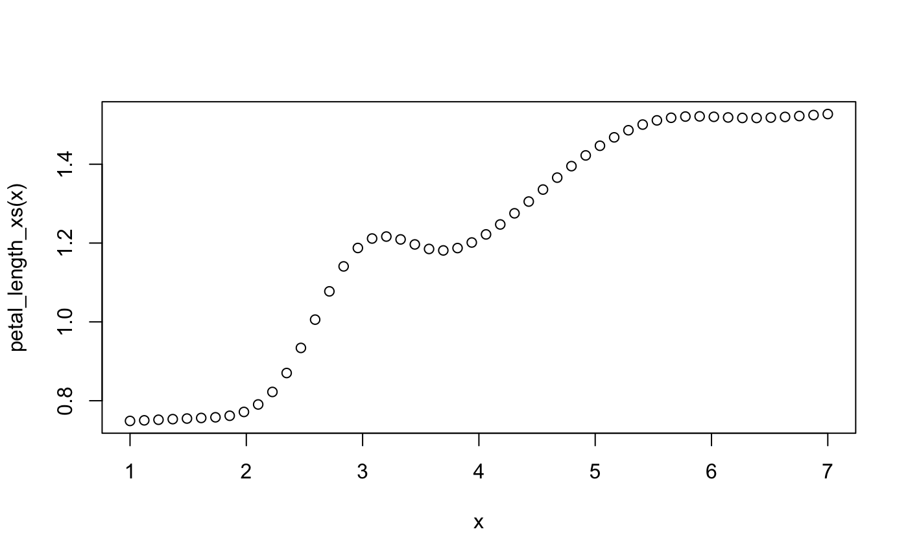

methods.RmdAs xspliner final model is GLM, predict method is just wrapper of stats::predict.glm function. Let’s see it on the below example:
library(xspliner)
library(randomForest)
library(magrittr)
rf_iris <- randomForest(Petal.Width ~ Sepal.Length + Petal.Length + Species, data = iris)
model_xs <- xspline(Petal.Width ~
Sepal.Length +
xs(Petal.Length, effect = list(grid.resolution = 100), transition = list(bs = "cr")) +
xf(Species, transition = list(stat = "loglikelihood", value = -300)),
model = rf_iris)
newdata <- data.frame(
Sepal.Length = 10,
Petal.Length = 2,
Species = factor("virginica", levels = levels(iris$Species)))
predict(model_xs, newdata = newdata)## 1
## -0.4567217Print method works similarly to the summary. In case of passing just the model, standard print.glm is used.
print(model_xs)##
## Call: stats::glm(formula = Petal.Width ~ Sepal.Length + xs(Petal.Length) +
## xf(Species), family = family, data = data)
##
## Coefficients:
## (Intercept) Sepal.Length
## -1.87754 -0.01153
## xs(Petal.Length) xf(Species)versicolorvirginica
## 3.07872 -0.71312
##
## Degrees of Freedom: 149 Total (i.e. Null); 146 Residual
## Null Deviance: 86.57
## Residual Deviance: 5.15 AIC: -70.07Summary method allows you to check details about transformation of specific variable.
Standard usage print(xspliner_object, variable_name)
Quantitative variable
When predictor is the quantitative variable its transition is based on GAM model. For this case print uses standard print.gam method.
print(model_xs, "Petal.Length")##
## Family: gaussian
## Link function: identity
##
## Formula:
## yhat ~ s(Petal.Length, bs = "cr")
##
## Estimated degrees of freedom:
## 8.83 total = 9.83
##
## GCV score: 0.001770352Qualitative variable
In case of qualitative predictor, standard print.factorMerger method is used.
print(model_xs, "Species")## Family: gaussian Factor Merger.
##
## Factor levels were merged in the following order:
##
## groupA groupB model pvalVsFull pvalVsPrevious
## --- ----------- -------------------- ---------- ----------- ---------------
## 0 -285.9861 1 1
## 1 versicolor virginica -299.1545 0 0
## 2 setosa versicolorvirginica -361.1629 0 0You can see all details in graphics
Transition method allows you to extract objects used during building transition of variables. There are three possible object types that can be extracted.
Each transition is built on top of the black box response data. For example the default response for quantitative variables is PDP - for qualitative ones ICE.
In order to extract the effect use transition method with type parameter equals to data
transition(model_xs, predictor = "Petal.Length", type = "data") %>%
head## Petal.Length yhat
## 1 1.000000 0.6987140
## 2 1.059596 0.6987140
## 3 1.119192 0.6987140
## 4 1.178788 0.7026794
## 5 1.238384 0.7048788
## 6 1.297980 0.7069511transition(model_xs, predictor = "Species", type = "data") %>%
head## Species yhat yhat.id
## 1 setosa 0.2480749 1
## 2 versicolor 0.6443884 1
## 3 virginica 0.7867783 1
## 4 setosa 0.2113078 2
## 5 versicolor 0.6338912 2
## 6 virginica 0.7780645 2After we built transition basing on continuity of variable specific model is created. In case of quantitative predictor we build GAM model in order to get spline approximation of effect. In case of qualitative predictor we build factorMerger object and get optimal factor division on that.
To extract the model, use transition method with type = "base":
transition(model_xs, predictor = "Petal.Length", type = "base")##
## Family: gaussian
## Link function: identity
##
## Formula:
## yhat ~ s(Petal.Length, bs = "cr")
##
## Estimated degrees of freedom:
## 8.83 total = 9.83
##
## GCV score: 0.001770352transition(model_xs, predictor = "Species", type = "base")## Family: gaussian Factor Merger.
##
## Factor levels were merged in the following order:
##
## groupA groupB model pvalVsFull pvalVsPrevious
## --- ----------- -------------------- ---------- ----------- ---------------
## 0 -285.9861 1 1
## 1 versicolor virginica -299.1545 0 0
## 2 setosa versicolorvirginica -361.1629 0 0The final result of building transition is transformation function, that is used in the final GLM model estimation.
To extract the function just use transition method with type = "function".
petal_length_xs <- transition(model_xs, predictor = "Petal.Length", type = "function")
x <- seq(1, 7, length.out = 50)
plot(x, petal_length_xs(x))
species_xf <- transition(model_xs, predictor = "Species", type = "function")
species_xf(c("setosa", "versicolor", "virginica"))## [1] setosa versicolorvirginica versicolorvirginica
## Levels: setosa versicolorvirginicaSummary method allows you to check the basic model details. See below what possibilities the method to xspliner model offers.
Standard summary method is just wrapper for summary::glm. In order to use this just type:
summary(model_xs)##
## Call:
## stats::glm(formula = Petal.Width ~ Sepal.Length + xs(Petal.Length) +
## xf(Species), family = family, data = data)
##
## Deviance Residuals:
## Min 1Q Median 3Q Max
## -0.69193 -0.08324 -0.02278 0.10663 0.50985
##
## Coefficients:
## Estimate Std. Error t value Pr(>|t|)
## (Intercept) -1.87754 0.13893 -13.514 < 2e-16 ***
## Sepal.Length -0.01153 0.03626 -0.318 0.751
## xs(Petal.Length) 3.07872 0.21269 14.475 < 2e-16 ***
## xf(Species)versicolorvirginica -0.71312 0.12710 -5.611 9.81e-08 ***
## ---
## Signif. codes: 0 '***' 0.001 '**' 0.01 '*' 0.05 '.' 0.1 ' ' 1
##
## (Dispersion parameter for gaussian family taken to be 0.03527195)
##
## Null deviance: 86.5699 on 149 degrees of freedom
## Residual deviance: 5.1497 on 146 degrees of freedom
## AIC: -70.073
##
## Number of Fisher Scoring iterations: 2Summary method allows you to check details about transformation of specific variable.
Standard usage summary(xspliner_object, variable_name)
Quantitative variable
When predictor is quantitative variable its transition is based on GAM model. For this case summary displays summary of that model.
summary(model_xs, "Petal.Length")##
## Family: gaussian
## Link function: identity
##
## Formula:
## yhat ~ s(Petal.Length, bs = "cr")
##
## Parametric coefficients:
## Estimate Std. Error t value Pr(>|t|)
## (Intercept) 1.211099 0.003995 303.1 <2e-16 ***
## ---
## Signif. codes: 0 '***' 0.001 '**' 0.01 '*' 0.05 '.' 0.1 ' ' 1
##
## Approximate significance of smooth terms:
## edf Ref.df F p-value
## s(Petal.Length) 8.826 8.991 674.3 <2e-16 ***
## ---
## Signif. codes: 0 '***' 0.001 '**' 0.01 '*' 0.05 '.' 0.1 ' ' 1
##
## R-sq.(adj) = 0.984 Deviance explained = 98.5%
## GCV = 0.0017704 Scale est. = 0.0015964 n = 100Qualitative variable
In case of qualitative predictor, the method displays data.frame storing information how factors were merged during the transition.
summary(model_xs, "Species")## orig pred
## 1 setosa setosa
## 2 versicolor versicolorvirginica
## 3 virginica versicolorvirginicaProviding model parameter instead of predictor, the summary displays a few statistics that compares original model with surrogate one. All statistics definitions are included in summary.xspline documentation.
Here we show one example for classification model.
For this example we use ISLR::Default data and build svm model as black box. The model aims to predict default variable, indicating whether the customer defaulted on their debt.
library(xspliner)
library(e1071)
set.seed(1)
data <- ISLR::Default
default.svm <- svm(default ~ ., data = data, probability = TRUE)
default.xs <- xspline(default ~ student + xs(balance) + xs(income), model = default.svm)In order to check the summary, we need to specify prediction functions for each model. In this case predictions are probabilities of success:
prob_svm <- function(object, newdata) attr(predict(object, newdata = newdata, probability = TRUE), "probabilities")[, 2]
prob_xs <- function(object, newdata) predict(object, newdata = newdata, type = "response")Almost each summary statistic compares models basing on some data.
In this case we’re going to compare models on training data providing:
newdata parameter as training datamodel parameter with black box modelprediction_funs as a list of prediction functions (for surrogate and original model respectively)## Models comparison
## 1 - Max prediction normed-diff: 0.5268109
## R^2: 0.9185403## Setting levels: control = No, case = Yes
## Setting levels: control = No, case = Yes## 1 - Max ROC diff: 0.8712113
## 1 - Mean ROC diff: 0.9506292Another set of statistics is generated for prediction functions that return response levels.
response_svm <- function(object, newdata) predict(object, newdata = newdata)
response_xs <- function(object, newdata) {
y_levels <- levels(newdata[[environment(object)$response]])
factor(y_levels[(predict.glm(object, newdata = newdata, type = "link") > 0) + 1], levels = y_levels)
}And similarly to previous example:
summary(default.xs, model = default.svm, newdata = data, prediction_funs = list(response_xs, response_svm))## Models comparison
## Mean predictions similarity: 0.9966
## ACC Black Box: 0.9719
## ACC Surrogate: 0.9729